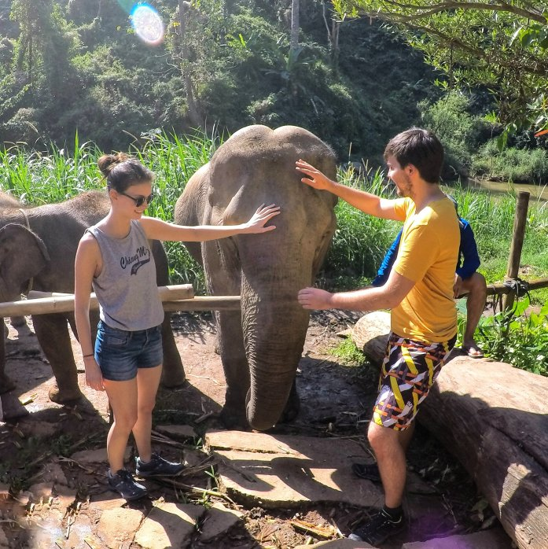
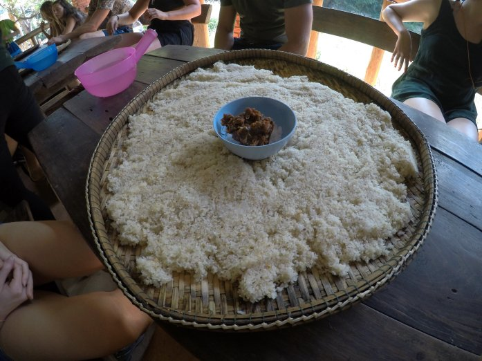
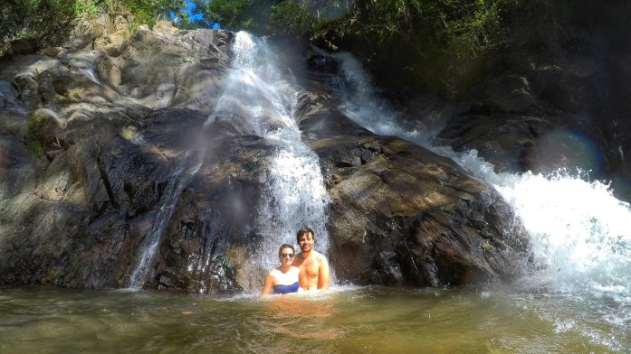

Mercoledi 10 gennaio è stata per certo una giornata intensissima e piena di emozioni! Nell’arco di poche ore abbiamo avuto l’occasione di conoscere degli elefanti, addentrarci nella giungla per fare un bagno sotto una cascata e di scendere lungo un fiume (con tanto di rapide) con un canotto armati di pagoda!
Nel Nord della Thailandia lo sfruttamento degli elefanti a scopi turistici (ma anche legato a fini di lavoro forzato nelle foreste per spostare tronchi e massi) è stato fortemente criticato. Per questo motivo, molte nuove piccole agenzie sono nate offrendo ai turisti la possibilità di entrare in contatto con gli elefanti in modo non invasivo.
Nel santuario che abbiamo visitato, abbiamo conosciuto 5 elefanti (due “piccoli” di 3-4 anni) che gli organizzatori hanno salvato da organizzazioni che li addestrano per esibirli in spettacoli comunemente noti come “elephant show”.
Dopo averli nutriti con banane e canne di zucchero, abbiamo avuto il compito di preparare dei medicamenti tradizionali a base di riso e sale, che gli abbiamo poi dato da mangiare per forzarli a bere più acqua ed evitare malattie legate alla disidratazione.
In seguito, abbiamo lavorato una liana secca trasformandola in una spazzola che, se spremuta nell’acqua rilascia sapone naturale. Li abbiamo poi raggiunti nel fiume e puliti!
Una lunga passeggiata nella giungla ci ha portati fino ad una cascata. Li ci siamo rinfrescanti facendo un bagno!

Comment Section